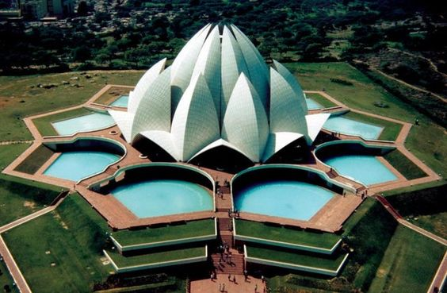

- The Lotus Temple is a place of worship for the Bahai faith and serves as a symbol of peace and unity. Visitors from all over the world come to admire its beauty and serenity.
- The Lotus Temple was designed by an Iranian architect, Fariborz Sahba, and was completed in 1986. It is made of concrete, covered with pure white marble, and has 27 petals that open up like a lotus flower.
The Lotus Temple is a remarkable architectural marvel located in Delhi, India. It is known for its iconic lotus-shaped design and serves as a place of worship for the Bahai faith. The temple was designed by Iranian architect Fariborz Sahba and completed in 1986. It is made of concrete covered with pure white marble and has 27 petals that open up like a lotus flower. The Lotus Temple is a popular tourist destination, attracting millions of visitors every year. It is also considered a symbol of peace and unity and is a testament to the Bahai faith's commitment to creating a harmonious world. The temple is open to visitors throughout the year and is a must-visit for those looking for a unique and peaceful experience.
The Lotus Temple in Delhi, India, can be visited throughout the year, but the best time to visit is during the cooler months from October to March. During these months, the weather is pleasant and ideal for outdoor activities, making it an ideal time to visit the temple and enjoy its beauty and serenity. Avoid visiting during the monsoon season, which lasts from July to September, as it can be quite humid and uncomfortable.
The Lotus Temple in Delhi, India is well connected by various modes of transportation. Some of the popular options include:
By Bus: There are several Delhi Transport Corporation (DTC) buses that connect the Lotus Temple to different parts of the city.
Private cars: Visitors can also choose to drive to the temple, but it is advisable to park in a designated area as parking can be limited.
Delhi Metro: The nearest metro station is Kalkaji Mandir on the Violet Line, which is just a 5-minute walk from the temple.
Taxis and Autorickshaws: Taxis and Autorickshaws are readily available for hire and are a convenient option for visitors.
Regardless of the mode of transportation chosen, it is easy and convenient to reach the Lotus Temple. Visitors are advised to plan their journey in advance and to consider traffic conditions when traveling in Delhi, which can get congested at times.There are various accommodation options near the Lotus Temple in Delhi, India, including hotels, guesthouses, homestays, and service apartments. These options cater to different budgets and preferences, ranging from budget-friendly to luxurious. To ensure a comfortable stay, it is advisable to book in advance, especially during peak season. Visitors can also consider staying in other areas of Delhi, such as Connaught Place or Karol Bagh, as they are well connected to the Lotus Temple by public transportation.

A beautiful temple with stunning architecture. It is very central in New Delhi, I'd recommend stopping by if you are out seeing the sights, this should be one of your top 5 tourist destinations in Delhi.
~ Robert
More....